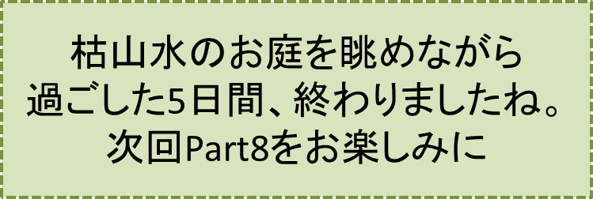

2センチの隙間-PART7-
『枯山水のお庭』の巻
笠原正雄
千代江小母さんが案内してくれた部屋は10畳は十分あるなと思われる広い和室です。床の間の掛軸には今にも飛び出してきそうな白虎が描かれています。
赤と白の可憐な花を咲かせた生花が、金銀が散りばめられた屏風を背に迎えてくれます。
部屋の前を走る長い廊下に沿って何枚もの大きなガラス戸がはめられています。
ガラス戸越しに真夏の太陽を一杯に浴びているお庭。部屋を一歩踏み出すと、廊下に面して幾つもの部屋が目に入ります。
長ーい廊下、ガラス戸越しに見える広ーいお庭。
“江戸時代の武家屋敷みたいだなぁ”
そんな思いでお庭を眺めます。京都の龍安寺の石庭を彷彿（ほうふつ）させる枯山水（かれさんすい）のお庭です。
マツ、カエデ、サルスベリ、ミヅキなどの植木、しっとりした黒みを感じるグレーの庭石そして白い砂。これらが見事に協和しハルモニアを奏でています。
紀元前数百年もの昔古代ギリシャの人々が、ハルモニアつまり協和が宇宙を統（す）べるものと考え尊んだ思想、つまり1対2、2対3などの簡単な数比こそが宇宙森羅万象を統べる根本原理と考える思想が、時空を超えて目の前の枯山水のお庭にしっかり生きています。
真夏のお日様にキラキラ輝く真っ白な砂、白砂が植木と庭石の間をぬって、山間（やまあい）を静かに流れ下っています。渓流のように幾つもの波面を見せながらゆっくり白砂が流れています。
古代ギリシャの思想と日本人古来の心とがハーモニーを奏でている……、息を飲んで眺めます。
現在どういう立場に置かれているのか、こんなこともすっかり忘れてお庭の景観を楽しみ続けます。
こうしてお庭を飽きずに眺めるうちに次第に
“あや乃事件だって？ A子に関わる事件である筈は絶対にないよ！ それに私に何の関係があるというのだろ？”
“とにかく全く身に覚えがないことだ。どうしてこんな立場になったのか、しっかり説明して欲しいぐらいだ、本当に……”
といった思い、胸の中にもたげ始めます。
とその時
「イサムお兄ちゃま！ お食事の用意が出来ましたよ」
と千代江小母さんの元気あふれる声です。
“あや乃事件”などとは、全く関係のない無実の人と言わんばかりの小母さんの明るさ、部屋一杯に広がります。救われる気持になります。元気になります。
「“浜清水御膳”という当地自慢のお料理なんです。中村屋八郎九郎のお心尽くしですよ」
と笑顔たっぷりで言った後、
「ゆっくり召し上がれ。旦那様は直ぐいらっしゃいますからね」
との言葉を残して部屋を出ていきます。
“浜清水御膳”とやらに箸をつけるのとほとんど同時に、堂々たる恰幅（かっぷく）如何にもスポーツマンという感じの男性が入ってきます。八郎九郎さんに違いありません。
「中村屋の八郎九郎です。よろしく」
と言いながら、食事中の私の目の前にどっかりと腰を下ろします。
掛軸に描かれた迫力満点の白虎を背にして、真正面から私をじっと見据えます。しばらくの沈黙の後ようやく口元に笑みが浮かびます。
石橋刑事の話では還暦を最近越えた人ということでしたが、目の前に座っている八郎九郎さんは実際の年齢よりもずっと若い印象です。
高校生の頃に奈和市の映画館で観たチャールズ・ブロンソン主演の『狼の挽歌』で、組織のボス実業家として好演した名優テリー・サバラスを思い出します。そのイメージが目の前に座る実業家スポーツマンそして篤志家と聞く中村屋八郎九郎さんと重なります。大親分という印象を強く受けます。
負けてはならないぞと私も精一杯胸を張ります。
“自分は奈和市にある日本有数のIT企業に勤めるサラリーマン”
という大きな自負がそうさせるのでしょう。
目を逸らすことなく、じっと八郎九郎さんの顔を真正面から直視します。
息が詰まるような沈黙がしばらく続いたでしょう。八郎九郎さんがおもむろに口を開きます。
「竹野イサムさんだね。あや乃事件の重要参考人であるお前さんを、このわしが預かるようにと石橋君から頼まれたんだ。お前さんにとっても、ホテルで軟禁状態のままじっと待っているよりも、ここの方がずっと気が紛れて良いだろう」
と言った後
「石橋君から聞いているけれど、あや乃の友人だったとか。本当かな？」
と少し首をかしげながらの質問です。
私は2度3度力強くうなずいて
「そうです。あや乃さんいやA子は、心にいつまでも残る決して消えることのない女神のような女性です」
この言葉を遮（さえぎ）るように大きく咳払いをした後
「どう見てもあや乃の友人には見えないねぇ。それに何だって？ 女神のような女性だって？ とんでもない！ あや乃はそんな女ではないよ。お前さんにとっては女神かも知れんが、この町では“あばずれ”ってとこなんだ」
「浜清水一番の繁華街「龍刃滝（りゅうじんだき）」切っての売れっ子ホステスなんだ。お前さんもご存知だろ？」
と急に口調を変えて、私の顔を覗（のぞ）き込むようにして尋ねます。
全くの驚天動地の言葉。思いもかけない話にショックを受け首を激しく横に振ります。到底受け入れられる話ではありません。
中村屋八郎九郎さんは、こんな私の様子を全く無視するかのように言葉を続けます。
「あや乃は相当に実入りが良かったんだろうねぇ。夕方からは「龍刃滝」のお店で働くけれど、それまでは真っ赤なスポーツカーを駆って、この辺りの名所旧跡にお出かけになるんだ。評判だよ、この町では」
と言った後、全く呆れたもんだと言わんばかりに何度も首を左右に振りながらため息をつきます。
気を取り直したのでしょう。もう一度ふうっとため息をついてから話を続けます。
「町の人達の噂話だけれど、派手な高級スポーツカーをぶっ飛ばして名所旧跡を訪ねるんだよ。場所は何処でもいいんだ。お目当ては観光地を訪ねてくる若いハンサムなサラリーマン、それに学生さんだからな」
と一気に言ってしまった後、驚くのはまだ早いぞと言わんばかりに背筋をしっかり伸ばして話を続けます。
「真っ赤な人目を引く高級スポーツカーの運転席の窓から、龍刃滝切っての美人ホステスあや乃から“一緒にドライブしない？”とこぼれるような笑顔で誘われたら、乗車拒否するような男性は世の中に一人もいないよ」
「後は彼女のペースさ。ホテルの高級レストラン、老舗（しにせ）の日本料理屋といった所で舌鼓を打った後は、あや乃の思いのまゝのシナリオで半日を楽しむって訳だよ。すっごい女だぜ」
とまくし立てた後、急に声を潜（ひそ）めて驚くべきことを話し続けます。
耳をふさぎたくなるような話です。
「ところがね、半年から1年ぐらい前のことだったかな。スポーツカーが走り回る光景が町の中でバッタリ見られなくなったんだ」
「別に気にもかけていなかったよ。何かあったんだろうと、ごく軽く考えていたんではなかったかなぁ。わしも忙しくしているしねぇ」
「ところがそうではなかった。あや乃は困り果てていたのだ。
ある日龍刃滝の有名高級クラブのママさんが、あや乃を連れて訪ねてきたんだよ。あや乃は生後2か月の男の赤ちゃんを抱っこしていたなぁ……」
「このママさん気立ての優しい人でね。どことなく上品さが感じられる気品あふれる人なんだ。
このママさんとお酒を飲みながら、とりとめもない話をしていると仕事の疲れがすっかり癒されることがしばしばなんだ。心の安らぎを覚えるママさんだよ」
「あの時、あや乃はわしに目を合わそうとせず終始うつむいていたと思うよ」
この後、八郎九郎さんが続けた話にも眉（まゆ）一つ動かさなかったでしょう。もう感情がすっかり飽和してしまったのでしょうね。八郎九郎さんの話に耳を傾けるばかりでした。
「あや乃は生後２か月の男の赤ちゃん伸介ちゃんを託児所に預けようとしたのだけれど、お父さんが全く誰か分からず、しかも勤めも夕方から夜遅くということが大きな壁になっていたのだ。中々、入所手続きまではこぎつけなかったんだよなぁ。あや乃は困り果てていたって訳だ」
「2、3年前だったがね、あや乃がお客さんとの間で大きなトラブルを起こしたとき、ママさんに頼まれた私がうまく解決してあげたことで、困ったときの神頼みならぬ八郎九郎頼みとなったんだろうねぇ。
……中村屋さんで預かってほしいという訳だ」
「中村屋には、母親役ベビーシッター役をしてくれる女性は沢山いるし、育ててあげようということになったのだ。幼い頃からしっかり育てれば中村屋を支えてくれる有能な店員さんになるだろう。そんなことも考えて、一大英断で養育することに決めたんだ。
いやあ、ひょっとすると将来は我が社の筆頭番頭さんになるかも知れないしね」
と言った後
“うわっ、はっ、はっ、はっ、はっ、はぁー”
と豪快に笑い飛ばします。
しばらくの間、私の顔を眺めながら目尻が下がりっ放しでしたけれど、急にきりっと眉を吊り上げ声高に言い放ちます。
「イサム君、お前さんが今朝座っていた広場のベンチの直ぐ目の前にある岩壁、あの岩壁から、あや乃は何者かと争ったあげく突き落とされたのだ。勿論助かるはずはない」
“犯人は必ず犯行現場に戻ってくる“
このことを固く信じていたのが石橋刑事だよ。丘の上の広場近くの木立の中から丘の上をこっそり見張っていたのだ、彼は」
「その現場にお前さんがやって来たって訳だ」
全く思いがけない話に、私は色を失います。
八郎九郎さんは、動揺する私を無視するかのように厳しい言葉を投げ続けてきます。
「営業マン達はお蔭様で心身とも誠に健やかでね、中村屋をしっかり支えている。儂にとっては有難い存在だよ。しかも彼等は町の安心安全を守るために、日頃常に目を光らすというボランティア的な活動をしてくれている」
「彼等は沢山のお得意先を一日中歩き回っている。ごく自然に町の見張り役にもなったという訳だ。嬉しいじゃないか」
と、顔をほころばせながら語った後
「何年か前だったけれど、子供達の危機を寸前に防いで市長さんから感謝状をもらっているんだ。儂も我が事のように、いやそれ以上に嬉しかったよ」
と得意気に話します。
しかしそれもほんの束の間でした。真顔になって続けます。
「事件直後一日も置かないで町をうろうろ歩き回る見知らぬ男、それがお前さんだったのだ」
「顔つきを見るとあや乃の相手としてはぴったりだ。営業マン達はお前さんの一挙一動を警察に報告していたって訳だ」
「一番関心を示してくれたのが石橋君だ。彼は信念の男だよ。犯人は犯行現場にいつか戻ってくると固く信じて、特段の注意を払っていた場所、それは岩壁が鋭く海に落ち込んでいるお前さんが訪れた広場だったのだ」
「朝早くビーチに向っていくお前さんの姿を見た営業マンの一人が、警察に報告すると石橋君は間髪入れず動いたよ。丘の広場近くの森の中でお前さんを我慢強く待っていたのだ、彼は」
「丘の上に、霧が立ち込めてきたけれど、お前さんが歩きまわる姿はしっかりシルエットのように浮かんでいたそうだ」
「土曜日の正午頃事件が起こり、土曜日の午後ビーチホテルの近くのレストラン「桃」で食事をしていたお前さんには、アリバイは成立しない。誰の目にも犯人に見えてくるじゃないか」
八郎九郎さんの言葉に頭の中は真っ白もはやパニック状態です。
“得体の知れない魔物が張り巡らした巨大なクモの巣に、私は捕らえられてしまったのではないか”
身体が小刻みに震えます。
八郎九郎さんは口元に笑みを浮かべます。
“誤解しないで欲しい。この自分こそがお前さんの味方だよ”
と言わんばかりに口を開きます。
「イサム君、来週から始まる取り調べでは何もかも正直に話すことですよ。下手に悪あがきすると、最悪終身刑ってこともあり得るからね。そうなったら大変だ」
こんな言葉を残すと、ちょっと用件があるからという言葉を残して部屋を出て行きます。
来週の月曜日から始まるというこの週末の土曜日曜の2日間は全くの放心状態だったでしょう。
浜清水の夜景が眺望できる温泉旅館にあるようなお風呂での入浴の時も、あるいは絵画や彫刻で飾られた洋室の豪華なベッドに身体を休めてみても、私の心が休まることはほんの一瞬もなかったでしょう。夜中にうなされて目が覚める都度思うことは唯一つ
“最悪終身刑だって？八郎九郎さんのおっしゃる最悪という言葉にどれだけの根拠、保証があるのだろう？最悪をさらに越える場合も法律上はあるに違いない。そのとき一体私は……”
冷や汗のようなものがほとばしり出ます。土曜の夜も日曜の夜も、悪夢にうなされて目を覚ました後、こんなことを繰り返し考え続けることとなりました。
時計の針はカタツムリのようにゆっくり進み月曜日の朝がきました。
もうすっかり覚悟を決めています。
“じたばたしても仕方がないこと、これも自分の定め冷静に受け止めよう”
“私は何もしていない。全力で無実を訴えるぞ”
こんな思いが私を奮い立たせます。石橋刑事を喜んで待とうという思い、高揚した気分が時間の経過とともに高まります。
“自分は神仏に誓って全くの無実。正々堂々と石橋刑事と正面から渡り合うぞ”
強い思いが胸にしっかり宿ります。
やはり裁きを受ける前ですね。深刻な表情で朝食を待っている私の前に、千代江小母さんが顔をほころばせながら部屋に入ってきます。
「お早うございます。お兄ちゃま！勝栗入りの朝がゆですよ」
と元気一杯のあいさつです。
私も負けずに大きな声で
「お早うございます！ いつも有難うございます」
とあいさつを交わします。小母さんは
「このおかゆでお兄ちゃまの勝ちですよ！お兄ちゃまは絶対に無罪。私、このことしっかり分かっていますよ」
と元気づけてくれます。
小母さんのお心尽くしの勝栗入り朝がゆを口にします。一口一口味わうごとに士気が高まります。
朝食後私は姿勢を正し、正座のまま1時間2時間待っていました。
……しかしどうしたことでしょう。石橋刑事は一向に現れません。やがて、時計の針は11時を指します。私は正座を止め
“いくらなんでも遅すぎるなぁ、でももう直ぐいらっしゃることだろう”
と小さくつぶやきながら、部屋に置いてあった小さな椅子を廊下近くに寄せお庭見物開始です。
夏至の太陽が植木達にまぶしく当り、緑緑緑の沢山の葉っぱ達が一段と輝きます。小さな小鳥達が枝から枝へと忙しく飛び回って楽しく遊んでいます。
白砂の流水飛び交う小鳥達、お日様が輝き静かに風にそよぐ葉っぱ達が見事に協和音を奏でて、山河の自然をこのお庭に写し出しています。
時計の針は11時を過ぎています。
“遅いなぁ”
と深い吐息をつきます。奈和中央にあるオフィスで寸秒を惜しんで仕事に取り組んでいる私でしたら、
“仕事が中断してしまうじゃないですか。直ぐ部屋に来てほしい”
“待っている間に目を通しますから説明資料データをメールに添付して即刻送って下さい”
といった内容のメールを矢継ぎ早やに送ることでしょう。
奈和中央に所在する日本有数のIT企業のオフィスで仕事に燃える私の魂と、裁きへの恐れも忘れて枯山水のお庭が奏でるハルモニアに感動し、時間を忘れて魅了されつづける私の魂、一体何れが本物なのでしょう？ 私自身にも答が見付からない難問です。
結局、取り調べ開始の日と宣言されていた月曜日、枯山水のお庭を眺めるだけで過ぎていきました。
“幾ら何でも明日こそは来るだろう”
“こんな状況で待たされるのは本当につらいことだなぁ”
“明日こそは絶対に来て欲しい”
こんな複雑な気持で待っていた翌火曜日でしたが、石橋刑事からは何の連絡もなく一日が過ぎてしまいました。この日もまた枯山水のお庭と語り合う一日となったのです。
待つことの苦しみを十分に味わった3日目水曜日の朝、千代江小母さんは部屋に入るなり立て続けに
「旦那様が夕べ遅くに
“石橋刑事は明日必ず来る”
と私におっしゃったのですよ。お兄ちゃまに伝えてほしいというお気持があったのでしょうね」
「今朝は思いっきり勝栗を沢山に入れた朝がゆを準備しましたよ」
とにこやかに話しかけながら朝食を食卓に並べます。
千代江小母さん心尽くしの朝がゆを、感謝の気持で味わった後、床の間に面したテーブルの前に正座し石橋刑事を待ちます。
“今日は来るに違いない。いや絶対に来てほしい”
時計の針が丁度9時を指した時でした、ふすまが静かに開き石橋刑事が、腰を思い切りかがめて入ってきます。石橋さんは、その場で正座していねいに一礼した後、押し殺したような声で語り始めます。
「誠に申しわけありません。貴方をこのお屋敷で不当に軟禁状態にしたこと、深く深くお詫びいたします……」
「あや乃事件の犯人は女性でした。2人の目撃者が月曜日早朝に獅子崎署に出頭してくれました」
「お2人のため匿名を使わせていただいて“春子”さんと“夏男”君というお名前を使わせていただきましょう」
「イサム君が腰をかけていたベンチに、事件当日春子さんと夏男くんは仲良く座っておしゃべりを楽しんでいたのです」
と話した後私のほうに身体を乗り出すようにし、いつもの、声で立て続けに話し始めます。耳をふさぎたくなるような内容の話でした。
「このときです、ベンチに座っている2人の存在を全く無視するように若い女性が通り過ぎていったのです。岩壁に向ってです」
「その女性、賀集あや乃さんだったのですよ。春子さん夏男君2人も直ぐ分かったそうです。何しろ派手なスポーツカーを朝早くからぶっ飛ばしている女性、いわば浜清水の有名人ですから」
「ところが直ぐ別の若い女性が丘の上に現われて、あや乃さんの後をつけるように岩壁に向って歩いていったのです」
「見知らぬ若い女性は、岩壁の側にたたずんでいるあや乃さんに無言で近づいていったそうです」
「あや乃さんと見知らぬ女性とは最初は静かに話し合っていたようです。しばらくすると金切声で激しくののしり合うようになったのです」
「そして遂に組んづほぐれつの争いになったのです。その激しさ、目をそむけたくなる程だったようです。
何しろ場所が場所、切り立った岩壁近くのひさしのような場所での激しい争いですから、春子さんも夏男君もただただ恐ろしく、止めに入るどころかベンチから立ち上がることもできなかったそうです」
「二人は岩壁の縁で激しくもみ合ったままでしたが、後から追ってきた見知らぬ若い女性があや乃さんを突き倒すようにして崖下に転落させたのです。海まで100メートル近い落差、助かる見込みはありません。ひどいことですよ！」
石橋刑事は、ふうっと、大きく深呼吸をしてから続けます。
「後から追ってきた女性は、争いで乱れた服装をたっぷり時間をかけて整えると、2人が座っているベンチにゆっくり近づいてきたのです。慌てる様子もなく2人に向ってゆっくり歩いてきたそうですよ」
「人間の心理って不思議なものですねぇ。女性が走って向かってきたら、春子さんも夏男君も反射的に逃げたでしょう。しかし、女性はゆっくりゆっくり2人に向って歩いてきたのです。落ちつき払ってゆっくり近づいてくる姿こそが、2人を金縛りにしたのでしょう。立ち上がることも出来なかったそうです」
「女性は2人の手前20メートルぐらいの所で立ち止まり、真夏の太陽を浴びながら天を仰ぎ見ていたそうですよ。何事も無かったようにね。息を飲むほどに美しい横顔だったと2人は繰り返し言っていました……」
「日の光にまぶしそうに顔をゆがめながらも、美しくこの上もなく美しく見える横顔に、2人は吸い込まれるように女性を見続けていたそうです」
「日の光に赤いストライプが2、3本描かれたブラウスそしてグレーのスカートが、とても印象的だったと言っていましたよ」
「女性はこぼれるような笑顔を見せながら、ベンチに座っている2人に近づいてきました。にこにこ笑いながらね。……しかし、春子さんには先程の激しい岩壁での争いの姿が残像のように残っていたのでしょうね。
彼女は殆んど気を失うようにして夏男君にもたれかかったのです。勿論、夏男君は優しく春子さんを抱き寄せて、大丈夫だよというように背中を優しく何度もなでたのです」
石橋刑事は再びふうっと大きく吐息をついてから
「数秒あるいは10数秒経ってから、ようやく気を取り直して顔を上げると、見知らぬ女性の姿はもう丘の上のどこにも見当たらなかったのです」
「多分2人が目を離した一瞬の隙をついて丘を駆け降り、現場から逃げ去ったのでしょう」
「目撃者達には直ぐ署に出頭して欲しかったですよ。月曜日の朝では遅すぎましたよ」
と如何にも残念というように、何回も溜息をついてから言葉を続けます。
「とっくの昔に女はどこかへ逃亡してしまったでしょう。私達の手の届く所にはもはやいないでしょう」
石橋刑事がどんなに言葉の数々を重ねても、私の耳には一切入りませんでした。頭の中は先程耳にした
“夏の強い日差しにまぶしげな顔”
“赤いストライプが数本入ったセーラ服風のブラウス”
“グレーに輝くスカート”
こんな風景がコマ撮りになって映し出されます。
“賀集あや乃を岩崖から突き落とした女、その女性こそあや乃自身、いや水遣りの女神A子なのだ”
“賀集あや乃の心にA子の魂が宿って、衝動的に身を投げたのだ……きっとそうだ”
“A子の魂は今も生きている！ 絶対に生きている！”
という確信を胸の中に強く抱きます。我が心を覆い尽くすように大きな衝撃が襲い、稲妻が走ります。
目瞬きもせず大きく目を見開いたまま石橋刑事を直視する私。時間の経過を感じることができません。
はっと我に返った時、正座していた石橋刑事は両手を畳に付け深々と頭を下げます。
「申しわけありませんでした。私はこれで失礼させていただきます。どうかお元気にお過ごし下さい」
との言葉を残して部屋を出て行きます。
